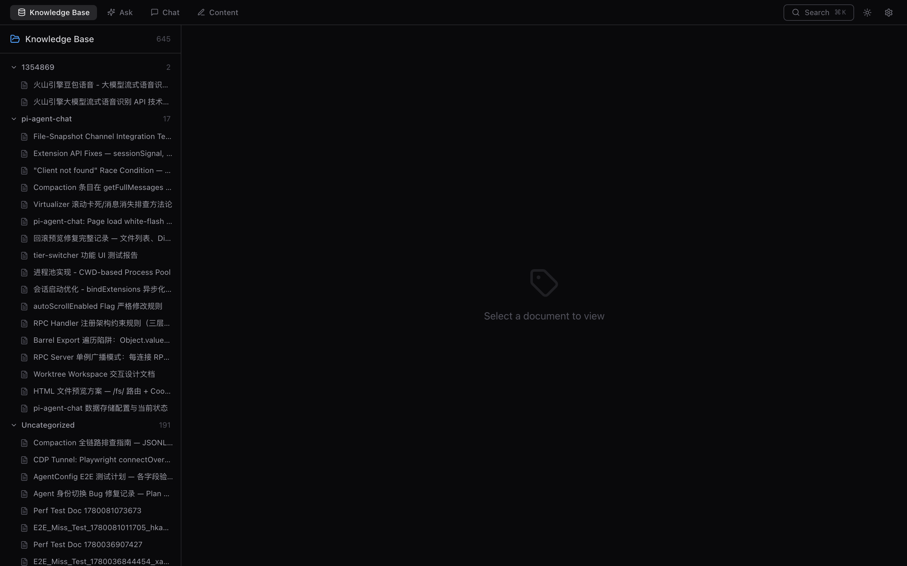
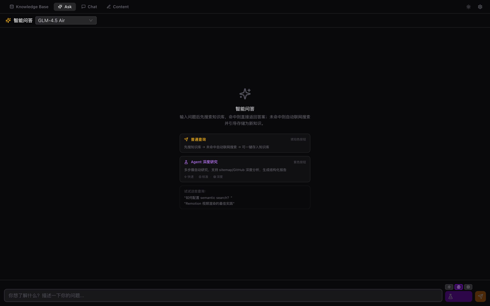
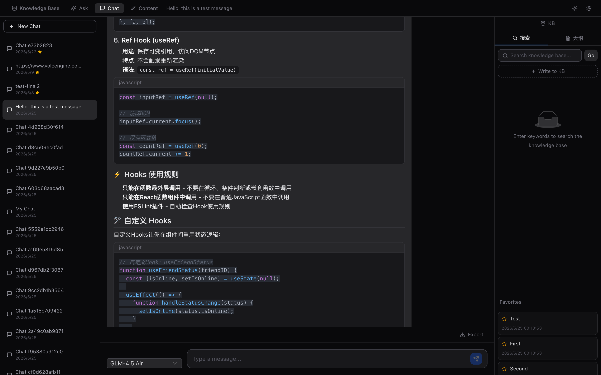
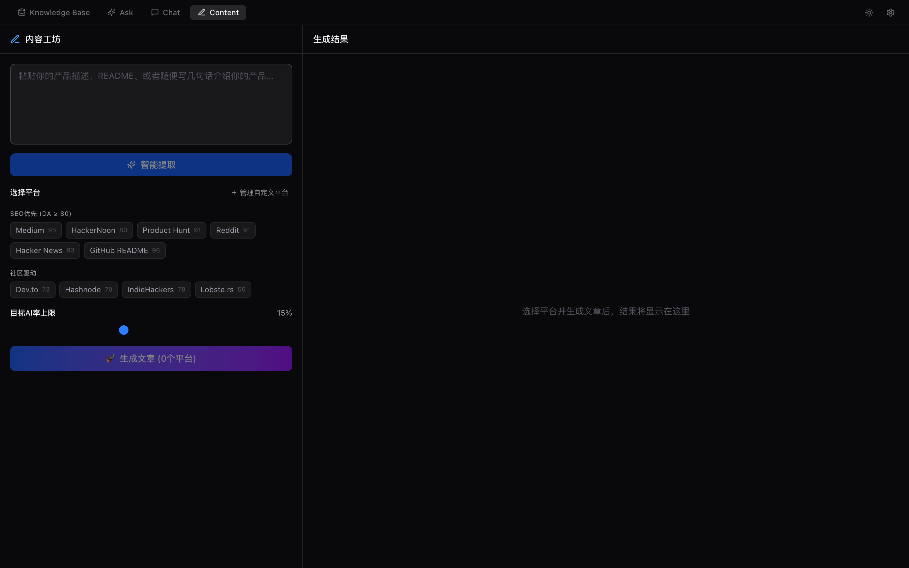
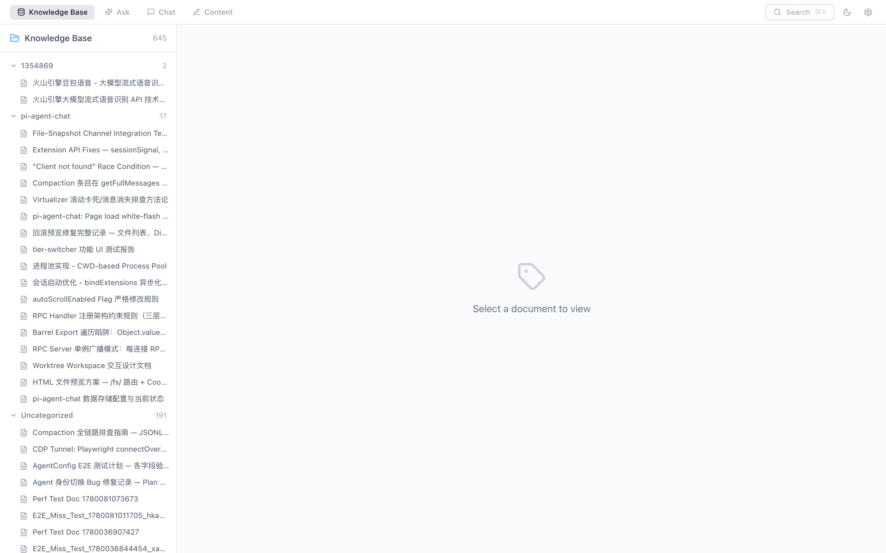

跨项目知识库 MCP 服务。三层搜索架构：文本匹配 + TF-IDF + 多语言语义向量。让 AI Agent 拥有持久化、可检索、自进化的知识系统。
不是简单的向量数据库。是专为 AI Agent 设计的知识管理系统——从存储、搜索到自进化，全链路覆盖。
P0 文本匹配 → P1 TF-IDF → P2 多语言语义向量。加权融合排序，越用越准。
kb_write / kb_read / kb_search / kb_ask / kb_ingest_url / kb_ingest_repo… 覆盖知识全生命周期。
kb_ask miss → Agent 联网搜索 → kb_ingest_url 存储 → 下次秒回。知识库自动增长。
Stdio（本地 MCP 零配置）+ HTTP（REST / SSE / StreamableHTTP）。一条命令切换。
Vite + React + Tailwind + Ant Design。知识库、智能问答、Chat 对话、内容工作台四合一。
Markdown / 代码 / URL 抓取 / GitHub 仓库分析。自动提取关键词、生成摘要、建立索引。
四标签页设计 + Dark / Light 双主题。真实截图，所见即所得。





无需克隆仓库，无需安装依赖。NPX 直接运行。
从毫秒级文本匹配到深度语义理解。三层递进，加权融合。
即时全文检索，关键词命中。适合精确查找已知内容。
词频-逆文档频率。关键词加权排序，处理拼写变形和部分匹配。
paraphrase-multilingual-MiniLM-L12-v2。跨语言语义检索，理解意图而非关键词。